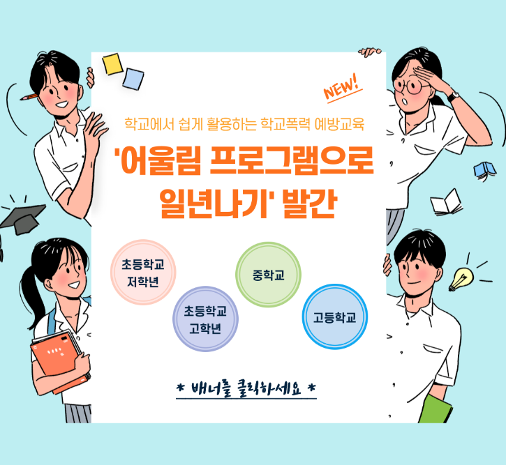
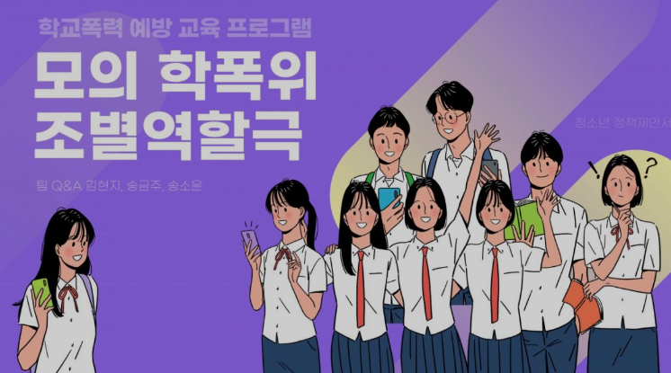
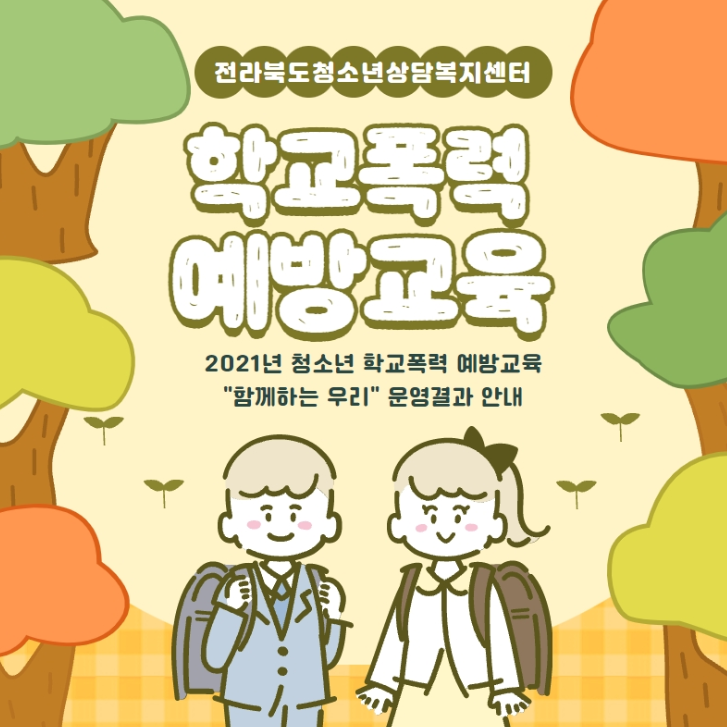

청소년 학교폭력 외부 프로그램 안내
[사이버1388청소년상담센터]
|
청소년상담 1388(전화·문자·온라인 상담)
- 청소년기 자녀를 둔 부모 및 보호자가 직접 청소년의 건강한 심리적 지도‧ 지원에 필요한 내용을 전문상담자와 상담할 수 있습니다. |
|---|
[청소년폭력예방 지원사업]
|
솔리언 또래상담 청소년들의 고민상담 대상 1위인 또래친구를 ‘또래상담자’로 양성하는 프로그램입니다. 또래상담자들은 청소년폭력 징후를 조기에 발견하여 개입하고 공감·배려 중심의 청소년문화 조성을 위해 활발히 노력하고 있습니다. |
또래상담 프로그램 개발 또래상담 프로그램 개발, 또래상담 지도교사 및 또래상담자 양성을 수행함으로써 청소년폭력 예방 환경 조성을 확대하고 있습니다. 또한, 양성된 또래상담자는 고민을 가진 친구를 돕는 역할과 공감배려문화를 촉진하는 역할을 합니다. |
맞춤형 콘텐츠 보급 여성가족부와 교육부와 협업을 통해 운영 노하우 공유, 또래상담자 양성 지원, 폭력 유형 맞춤형 콘텐츠 보급 등 다방면으로 또래상담 사업 내실화를 추진하고 있습니다. 또한, 이를 위해 다양한 사업을 운영하고 기획하며 노력하고 있습니다. |
|---|
[학교폭력 예방 프로그램]
|
어울림 프로그램 학교폭력예방교육지원센터  초·중등학교 학생들의 학교폭력을 근본적으로 예방하기 위한 국가수준의 학교폭력 예방교육 프로그램입니다. 학생들의 학교폭력 예방 역량을 체계적으로 강화할 수 있도록 대상별 역량 또는 문제유형 프로그램으로 구성되어 있어 학교에 적합한 예방교육 실시를 돕기 위해 이를 지원하고 있습니다. |
조별 역할극 광명시청소년재단  청소년들이 지속적으로 학교폭력예방의 배경을 쌓을 수 있도록 돕는 프로그램입니다. 직접 가해자, 피해자, 위원회, 방관자, 배심원 등으로 구성해봄으로서 각자의 입장을 이해하는 공감대 형성을 이끌어낼 수 있습니다. 이 공감대 형성을 통해 더 넓은 시각을 갖도록 하며 학교폭력의 경각심 또한 함께 느낄 수 있도록 합니다. |
학교폭력 예방 교육 전북청소년상담복지센터  집단상담(교육)과 다양한 맞춤형 체험프로그램 제공으로 청소년들의 학교폭력 인신 믹 또래 간 소통, 협동 능력을 향상하기 위해 기획되었습니다. 미술과 역할극을 통해 학교폭력에 대한 심리상태 표현 및 정서 이완을 경험해볼 수 있습니다. 또한, 또래관계 배려능력 증진에도 효과를 나타낼 수 있다. |
|---|

PROTECTION
©BaekSeok University Class Culultur Art Web Contents Planned Production Team 4